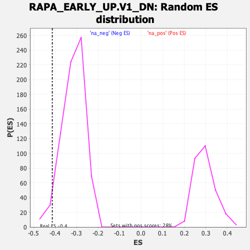

| | | Dataset | DE_genes |
| Phenotype | NoPhenotypeAvailable |
| Upregulated in class | na_neg |
| GeneSet | RAPA_EARLY_UP.V1_DN |
| Enrichment Score (ES) | -0.4131198 |
| Normalized Enrichment Score (NES) | -1.3101596 |
| Nominal p-value | 0.044568244 |
| FDR q-value | 0.27296963 |
| FWER p-Value | 0.998 |
Table: GSEA Results Summary
 Fig 1: Enrichment plot: RAPA_EARLY_UP.V1_DN
Fig 1: Enrichment plot: RAPA_EARLY_UP.V1_DN
Profile of the Running ES Score & Positions of GeneSet Members on the Rank Ordered List
| PROBE | GENE SYMBOL | GENE_TITLE | RANK IN GENE LIST | RANK METRIC SCORE | RUNNING ES | CORE ENRICHMENT | | 1 | TRIM22 | | | 241 | 3.342 | 0.0105 | No |
| 2 | SF3A2 | | | 358 | 2.399 | 0.0218 | No |
| 3 | CBX4 | | | 370 | 2.343 | 0.0395 | No |
| 4 | COL9A2 | | | 473 | 1.852 | 0.0474 | No |
| 5 | MSMO1 | | | 475 | 1.846 | 0.0618 | No |
| 6 | FLOT1 | | | 539 | 1.633 | 0.0705 | No |
| 7 | RNF167 | | | 657 | 1.360 | 0.0736 | No |
| 8 | HSPA1A | | | 670 | 1.333 | 0.0833 | No |
| 9 | FAM49A | | | 681 | 1.312 | 0.0929 | No |
| 10 | FTO | | | 690 | 1.295 | 0.1025 | No |
| 11 | LGALS3BP | | | 702 | 1.274 | 0.1118 | No |
| 12 | TROAP | | | 973 | 0.894 | 0.1012 | No |
| 13 | TFAP2A | | | 1244 | 0.646 | 0.0887 | No |
| 14 | PNPLA4 | | | 1251 | 0.640 | 0.0933 | No |
| 15 | LTB | | | 1307 | 0.609 | 0.0945 | No |
| 16 | MID1 | | | 1370 | 0.575 | 0.0950 | No |
| 17 | NHLH1 | | | 1374 | 0.574 | 0.0993 | No |
| 18 | ROR2 | | | 1535 | 0.502 | 0.0928 | No |
| 19 | GRN | | | 1573 | 0.481 | 0.0942 | No |
| 20 | APBA3 | | | 1576 | 0.480 | 0.0978 | No |
| 21 | DUSP2 | | | 1611 | 0.469 | 0.0993 | No |
| 22 | GLUL | | | 1677 | 0.444 | 0.0985 | No |
| 23 | IFI27 | | | 1711 | 0.427 | 0.0997 | No |
| 24 | SMAP1 | | | 1750 | 0.407 | 0.1005 | No |
| 25 | MTMR2 | | | 1976 | 0.335 | 0.0884 | No |
| 26 | YIPF2 | | | 1992 | 0.330 | 0.0900 | No |
| 27 | FAM168A | | | 2327 | 0.239 | 0.0701 | No |
| 28 | GRIN1 | | | 2392 | 0.229 | 0.0677 | No |
| 29 | MICU1 | | | 2426 | 0.220 | 0.0673 | No |
| 30 | SLC22A14 | | | 2463 | 0.216 | 0.0666 | No |
| 31 | PDZK1IP1 | | | 2712 | 0.175 | 0.0518 | No |
| 32 | PRH2 | | | 2754 | 0.167 | 0.0505 | No |
| 33 | TNN | | | 3346 | 0.110 | 0.0128 | No |
| 34 | CYP2F1 | | | 3420 | 0.106 | 0.0088 | No |
| 35 | MEP1A | | | 3440 | 0.105 | 0.0084 | No |
| 36 | RAB5B | | | 3466 | 0.101 | 0.0076 | No |
| 37 | KISS1 | | | 3502 | 0.099 | 0.0061 | No |
| 38 | SNTB1 | | | 3622 | 0.091 | -0.0010 | No |
| 39 | YTHDF3 | | | 3646 | 0.089 | -0.0018 | No |
| 40 | DDN | | | 4024 | 0.068 | -0.0258 | No |
| 41 | NCF1 | | | 4078 | 0.066 | -0.0288 | No |
| 42 | MAP1A | | | 4311 | 0.052 | -0.0435 | No |
| 43 | CAV3 | | | 4662 | 0.034 | -0.0661 | No |
| 44 | MYCN | | | 4905 | 0.021 | -0.0817 | No |
| 45 | GRM2 | | | 5034 | 0.014 | -0.0900 | No |
| 46 | NCAPH | | | 5482 | -0.008 | -0.1191 | No |
| 47 | MROH5 | | | 5629 | -0.017 | -0.1284 | No |
| 48 | COBLL1 | | | 5674 | -0.019 | -0.1312 | No |
| 49 | PSD | | | 5687 | -0.020 | -0.1318 | No |
| 50 | GFRA2 | | | 5961 | -0.036 | -0.1493 | No |
| 51 | COL10A1 | | | 6041 | -0.042 | -0.1542 | No |
| 52 | PCSK2 | | | 6084 | -0.044 | -0.1565 | No |
| 53 | CRMP1 | | | 6129 | -0.048 | -0.1590 | No |
| 54 | INPP5J | | | 6350 | -0.062 | -0.1729 | No |
| 55 | HLA-E | | | 6478 | -0.071 | -0.1806 | No |
| 56 | CIB2 | | | 6705 | -0.089 | -0.1947 | No |
| 57 | SNAPC4 | | | 6843 | -0.098 | -0.2028 | No |
| 58 | ZNF175 | | | 7072 | -0.116 | -0.2168 | No |
| 59 | CNKSR2 | | | 7137 | -0.122 | -0.2200 | No |
| 60 | MARK2 | | | 7312 | -0.137 | -0.2303 | No |
| 61 | ZNF799 | | | 7314 | -0.137 | -0.2293 | No |
| 62 | SCCPDH | | | 7446 | -0.148 | -0.2367 | No |
| 63 | ALDH1B1 | | | 7661 | -0.167 | -0.2493 | No |
| 64 | MTMR3 | | | 7733 | -0.173 | -0.2526 | No |
| 65 | MGST2 | | | 8071 | -0.205 | -0.2730 | No |
| 66 | HAAO | | | 8112 | -0.209 | -0.2739 | No |
| 67 | SMAD9 | | | 8205 | -0.219 | -0.2782 | No |
| 68 | KDM4B | | | 8291 | -0.229 | -0.2820 | No |
| 69 | IL12RB1 | | | 8306 | -0.230 | -0.2811 | No |
| 70 | WNK1 | | | 8378 | -0.237 | -0.2839 | No |
| 71 | COG5 | | | 8383 | -0.238 | -0.2823 | No |
| 72 | WDTC1 | | | 8508 | -0.252 | -0.2884 | No |
| 73 | FARP2 | | | 8548 | -0.256 | -0.2889 | No |
| 74 | CACNB4 | | | 8923 | -0.300 | -0.3109 | No |
| 75 | STK11 | | | 9284 | -0.345 | -0.3317 | No |
| 76 | OVOL1 | | | 9650 | -0.396 | -0.3524 | No |
| 77 | MET | | | 9736 | -0.409 | -0.3548 | No |
| 78 | SLC9A3R1 | | | 10086 | -0.459 | -0.3739 | No |
| 79 | PTGS1 | | | 10110 | -0.463 | -0.3718 | No |
| 80 | FLT3LG | | | 10236 | -0.482 | -0.3762 | No |
| 81 | XRCC1 | | | 10362 | -0.499 | -0.3804 | No |
| 82 | DUSP14 | | | 10364 | -0.499 | -0.3765 | No |
| 83 | KDM4A | | | 10614 | -0.540 | -0.3885 | No |
| 84 | GALNS | | | 10743 | -0.559 | -0.3925 | No |
| 85 | ABTB2 | | | 11060 | -0.607 | -0.4083 | Yes |
| 86 | NR2F1 | | | 11103 | -0.615 | -0.4063 | Yes |
| 87 | CIT | | | 11132 | -0.622 | -0.4032 | Yes |
| 88 | AXL | | | 11136 | -0.623 | -0.3985 | Yes |
| 89 | EIF4EBP1 | | | 11165 | -0.629 | -0.3954 | Yes |
| 90 | PTCH1 | | | 11190 | -0.634 | -0.3920 | Yes |
| 91 | CCDC85B | | | 11309 | -0.658 | -0.3945 | Yes |
| 92 | ZBTB6 | | | 11355 | -0.668 | -0.3922 | Yes |
| 93 | HDAC6 | | | 11512 | -0.701 | -0.3969 | Yes |
| 94 | BBC3 | | | 11605 | -0.721 | -0.3972 | Yes |
| 95 | PRELP | | | 11692 | -0.740 | -0.3970 | Yes |
| 96 | PHYHIP | | | 11799 | -0.762 | -0.3979 | Yes |
| 97 | GBF1 | | | 11842 | -0.771 | -0.3946 | Yes |
| 98 | NAGPA | | | 11925 | -0.791 | -0.3937 | Yes |
| 99 | WFS1 | | | 12184 | -0.852 | -0.4039 | Yes |
| 100 | THOC1 | | | 12214 | -0.858 | -0.3990 | Yes |
| 101 | TACR1 | | | 12235 | -0.862 | -0.3936 | Yes |
| 102 | FXYD1 | | | 12253 | -0.865 | -0.3879 | Yes |
| 103 | ATG2A | | | 12281 | -0.873 | -0.3828 | Yes |
| 104 | TAF4 | | | 12465 | -0.919 | -0.3875 | Yes |
| 105 | NFE2L1 | | | 12494 | -0.926 | -0.3821 | Yes |
| 106 | KRT4 | | | 12501 | -0.929 | -0.3752 | Yes |
| 107 | KCNQ1 | | | 12545 | -0.940 | -0.3706 | Yes |
| 108 | BCKDK | | | 12696 | -0.981 | -0.3727 | Yes |
| 109 | PSMA7 | | | 12713 | -0.986 | -0.3660 | Yes |
| 110 | BRMS1 | | | 12839 | -1.025 | -0.3661 | Yes |
| 111 | HLCS | | | 12871 | -1.036 | -0.3600 | Yes |
| 112 | SELPLG | | | 12880 | -1.038 | -0.3523 | Yes |
| 113 | PSMD13 | | | 13055 | -1.092 | -0.3551 | Yes |
| 114 | ESRRA | | | 13078 | -1.098 | -0.3479 | Yes |
| 115 | PRKCE | | | 13100 | -1.106 | -0.3406 | Yes |
| 116 | SNTA1 | | | 13305 | -1.175 | -0.3447 | Yes |
| 117 | OSBPL2 | | | 13369 | -1.203 | -0.3393 | Yes |
| 118 | IGFBP3 | | | 13420 | -1.220 | -0.3330 | Yes |
| 119 | F10 | | | 13488 | -1.248 | -0.3276 | Yes |
| 120 | CRIP2 | | | 13497 | -1.252 | -0.3183 | Yes |
| 121 | IL11RA | | | 13851 | -1.400 | -0.3303 | Yes |
| 122 | SEC16A | | | 13924 | -1.435 | -0.3237 | Yes |
| 123 | GDPD5 | | | 13950 | -1.444 | -0.3140 | Yes |
| 124 | SF3B1 | | | 14247 | -1.628 | -0.3206 | Yes |
| 125 | PINK1 | | | 14322 | -1.672 | -0.3123 | Yes |
| 126 | PISD | | | 14406 | -1.720 | -0.3042 | Yes |
| 127 | BCAT2 | | | 14421 | -1.732 | -0.2915 | Yes |
| 128 | NUMA1 | | | 14520 | -1.805 | -0.2837 | Yes |
| 129 | SOS1 | | | 14542 | -1.821 | -0.2708 | Yes |
| 130 | AOC3 | | | 14595 | -1.867 | -0.2595 | Yes |
| 131 | PCBP4 | | | 14634 | -1.907 | -0.2470 | Yes |
| 132 | PLEKHO2 | | | 14643 | -1.913 | -0.2325 | Yes |
| 133 | MINK1 | | | 14671 | -1.938 | -0.2190 | Yes |
| 134 | ZNF3 | | | 14794 | -2.059 | -0.2108 | Yes |
| 135 | DPH1 | | | 14836 | -2.094 | -0.1970 | Yes |
| 136 | ARHGAP4 | | | 14878 | -2.138 | -0.1829 | Yes |
| 137 | TSPAN4 | | | 14951 | -2.238 | -0.1700 | Yes |
| 138 | KRT17 | | | 14964 | -2.262 | -0.1531 | Yes |
| 139 | PLXND1 | | | 14985 | -2.284 | -0.1364 | Yes |
| 140 | ASMTL | | | 15002 | -2.303 | -0.1194 | Yes |
| 141 | LMNA | | | 15123 | -2.501 | -0.1076 | Yes |
| 142 | ENG | | | 15171 | -2.577 | -0.0904 | Yes |
| 143 | EPHB4 | | | 15263 | -2.824 | -0.0741 | Yes |
| 144 | CRY2 | | | 15331 | -3.075 | -0.0544 | Yes |
| 145 | ACTR1B | | | 15412 | -3.696 | -0.0305 | Yes |
| 146 | ITPKC | | | 15445 | -4.370 | 0.0017 | Yes |
Table: GSEA details [plain text format]

Fig 2: RAPA_EARLY_UP.V1_DN: Random ES distribution
Gene set null distribution of ES for RAPA_EARLY_UP.V1_DN